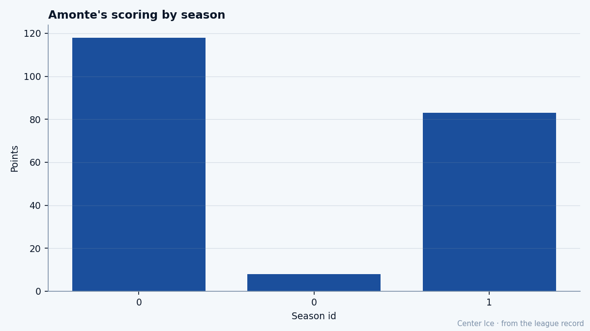

The Captain: Tony Amonte and the weight of the C
The Masterton Trophy winner scores 13.9 percent of a last-place club's goals. The Bureau has his potential at 56 and his base at 88. He has $17.70M left on his contract and morale of 94.
 Tomáš VránaProfile writer · The Sweater
Tomáš VránaProfile writer · The SweaterThe Bill Masterton Memorial Trophy went to  Tony Amonte82 last June. It is given to the player who best exemplifies perseverance, sportsmanship and dedication to hockey. Amonte scored 118 points in 82 games at 33 years old and Philadelphia finished 40-29-13, third in the Atlantic, a playoff team. He is 34 now, the captain of a club that wins 21 games, and the Bureau puts his potential at 56 against a base grade of 88.
Tony Amonte82 last June. It is given to the player who best exemplifies perseverance, sportsmanship and dedication to hockey. Amonte scored 118 points in 82 games at 33 years old and Philadelphia finished 40-29-13, third in the Atlantic, a playoff team. He is 34 now, the captain of a club that wins 21 games, and the Bureau puts his potential at 56 against a base grade of 88.
The form reads -2 on the Development Index today, which drops his published overall to 81. The Index has him below his base. His pace sits at 112, down 6 from last season's 118, on 83 points in 61 games. Twenty-one games remain in the season and  Philadelphia Flyers sits last in the Atlantic division with 60 points.
Philadelphia Flyers sits last in the Atlantic division with 60 points.

The numbers say a 34-year-old right wing whose value is all hands. His DEKG reads 91. His HERO is 86, the same number as his PASS and his PUCK. ACCU at 85, ACCE at 84. The two lowest things the Book says about him are his FACE grade of 50 and his FIGH grade of 50: he does not take a draw and he does not fight. The 91 in decoration is what keeps a man in the lineup at 34 on $5.90M a year.
From Hingham, through the Cup year he was not in
Amonte was born in Hingham, Massachusetts, on August 2, 1970. He is 5 feet 11 inches, 200 pounds, shoots left. The New York Rangers drafted him 68th overall in the third round of 1988. He played three seasons in the Rangers' system, scoring 84 goals, and made his debut in the 1991 playoffs. With seven games remaining in the 1993-94 season, the Rangers traded him to the  Chicago Blackhawks Blackhawks. New York won the Stanley Cup that June. Amonte was already in Chicago.
Chicago Blackhawks Blackhawks. New York won the Stanley Cup that June. Amonte was already in Chicago.
He won gold with Team USA at the 1996 World Cup of Hockey. He played the years of his life in Chicago's blue and red. He began the 2002-03 season in  Phoenix Coyotes and Philadelphia traded for him near the end of it. By December 2004, when the record opened, he was already in a Flyers sweater.
Phoenix Coyotes and Philadelphia traded for him near the end of it. By December 2004, when the record opened, he was already in a Flyers sweater.
He is 34. He has played 61 of 82 games this season without a single day on the injured list. His PIM is 24 in 61 games. His MPG is 20.1. His morale is 94.
What the room follows
The captain of the Philadelphia Flyers Flyers is surrounded by names the league remembers.  Jeremy Roenick86 sits at 85 overall.
Jeremy Roenick86 sits at 85 overall.  Simon Gagne84 is at 82. John LeClair and
Simon Gagne84 is at 82. John LeClair and  Michal Handzus81 are at 81.
Michal Handzus81 are at 81.  Keith Primeau82 is at 80.
Keith Primeau82 is at 80.  Jeff Hackett81 is at 83 in goal. None of them is the man with morale 94, or the man the room looked at last June when the Masterton came in through the door.
Jeff Hackett81 is at 83 in goal. None of them is the man with morale 94, or the man the room looked at last June when the Masterton came in through the door.
Amonte scores 13.9 percent of Philadelphia's goals this season. The club has produced 209 goals in 61 games. He has scored 29 of them. He adds 54 assists on top of those 29, for 83 points total, which puts him 17 points ahead of Gagne, the next man up on the team sheet.
He carries $5.90M a year with three full seasons left. That is $17.70M the Flyers owe him. He is the highest-paid man on a club that finishes last in its division, and the Bureau has his ceiling at 56 while his base sits at 88.
The shape of the decline, in the Bureau's own words
The Development Index is the form term on the overall, and the Index has Amonte at -2. That means the overall of 81 is the base of 88 with the current form subtracted. The gap between base and potential, between 88 and 56, is the distance the Bureau believes remains to fall. He is 34 years old. His pace dropped by 6 points per 82 games from last season. He played all 82 last season. He has played 61 this season and is healthy.
The room around him is old. Roenick is 34. LeClair is 36. Hackett is 38. Primeau is 32. The Flyers' youngest regular is Gagne at 24. The 32-grade gap between Amonte's base and his potential belongs to a locker room where the captain's HERO grade is 86 and nobody argues about who wears the C.
The Masterton Trophy sits in a building that finishes last in the Atlantic. Amonte is 81 overall against a base of 88 and a potential of 56, with a morale of 94. He will be 35 in August, his contract runs three more years, and the 21 wins on the board this season will be what the room carries into next October.